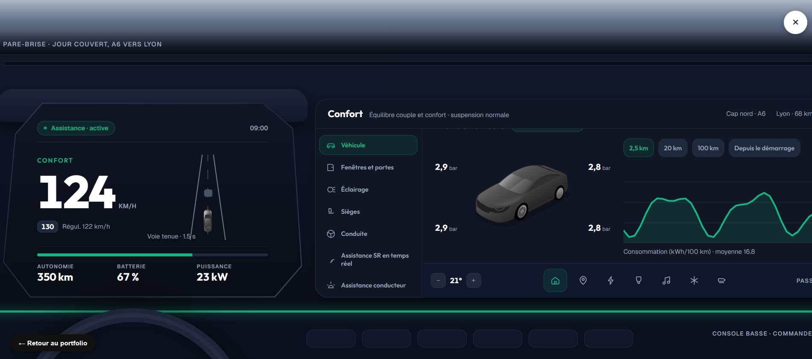
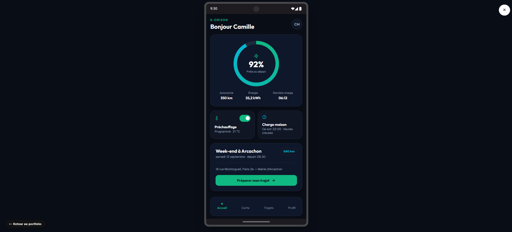

Automobile & Mobilité

Vision
Product Designer spécialisée en UX/UI, je conçois des expériences digitales avec un intérêt particulier pour l'automobile et les nouvelles mobilités.
Je m'intéresse à la transformation du véhicule en plateforme software-defined : interfaces embarquées, services connectés, électromobilité et nouvelles formes d'interaction entre l'humain, le véhicule et son environnement.
À l'ère de l'IA agentique, je souhaite explorer une question centrale : comment concevoir des expériences automobiles qui soient à la fois intelligentes, contextuelles et personnalisées — sans sacrifier la compréhension, le contrôle et la confiance de l'utilisateur ?
À travers mes projets d'IHM cockpit et de recharge pour véhicule électrique, je cherche à expérimenter ces nouveaux usages et à réfléchir à la continuité de l'expérience entre véhicule, smartphone et services de mobilité.
Je souhaite aujourd'hui mettre cette approche au service d'équipes qui imaginent les prochaines générations d'expériences automobiles et de mobilité.

Voir le prototype animé →Prototype animé d'interface HMI pour véhicule électrique : écran de gauche conducteur et écran central conçus comme deux plans d'information distincts, avec modes de conduite Éco / Confort / Sport, navigation, gestion de l'énergie et de la recharge, climatisation et média.
Hiérarchie — une information par plan
L'écran de gauche ne porte que la conduite : vitesse, voie, énergie. Tout le reste vit sur l'écran central. Les 2px de règle séparent les plans sans ajouter d'ornement.
Couleur — le vert ne décore jamais
L'accent (vert Clean-Tech, cohérent avec le réseau Eleckar d'E-Orizon) est réservé au mode actif, à l'itinéraire et aux alertes. Les modes se distinguent par la typographie et la densité, pas par un habillage coloré.
Grille — six tuiles, jamais plus
La personnalisation se fait dans une grille 3×2 fermée : l'utilisateur choisit le contenu, le système garde le rythme et les cibles tactiles.
Énergie — le chiffre utile, pas le chiffre brut
L'autonomie est exprimée en kilomètres et en état de charge à l'arrivée. La consommation instantanée reste secondaire, en histogramme.
Ce projet m'a permis de me poser des questions telles que :
- Comment réduire l'anxiété liée à l'autonomie ?
- Comment rendre la recharge prévisible ?
- Comment connecter l'expérience mobile à l'expérience embarquée ?
- Comment anticiper les besoins du conducteur ?

Voir le prototype E-Orizon →Prototype mobile d'application de mobilité électrique : de la préparation d'un trajet longue distance jusqu'à l'arrivée, en tenant compte de la batterie, du réseau d'abonnement, des bornes disponibles sur l'itinéraire et du budget de recharge — 7 écrans, d'un aller simple Paris → Arcachon.
Réseau abonné, priorité visible
Le réseau d'abonnement (Eleckar) est mis en avant sur le trajet et sur la carte, avec le tarif abonné distingué du tarif public — l'utilisateur voit immédiatement où il paie moins.
Le budget suit tout le trajet
Un montant estimé au départ, mis à jour en temps réel pendant la conduite, confronté au coût réel à l'arrivée — jamais une surprise.
Recalcul continu, jamais figé
Consommation réelle, vent, température et disponibilité des bornes recalculent l'itinéraire en continu ; un retard de plus de 20 minutes reporte automatiquement la réservation de borne.
Comparer avant de s'arrêter
Avant chaque arrêt, les fournisseurs alternatifs sont comparés au coût total du détour, pas seulement au prix au kWh.